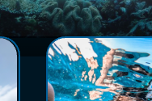
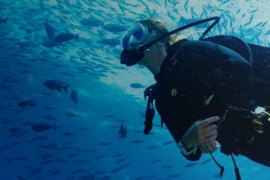

图片人物影视环境
全部分类
视频
新闻
成都大运会
开幕式
男子轮滑赛
上架
聚合包
送审
删除
下载
复制
共享
移动
审核状态
编目状态
码率
时长
创建时间
请输入
搜索
重置
全部
视频
图片
音频
文档
其他
聚合包
全选
时间排序
图片人物影视环境
图片人物影视环境
图片人物影视环境
图片人物影视环境
图片人物影视环境
视频人物影视环境

图片人物影视环境

图片人物影视环境
图片人物环境
图片人物城市
视频人物环境
图片人物环境
图片人物生活